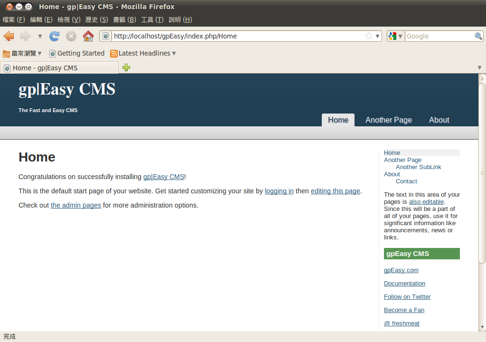
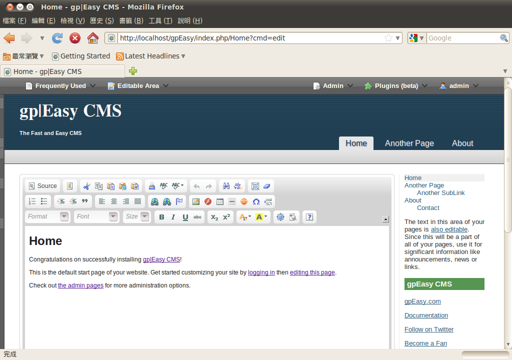
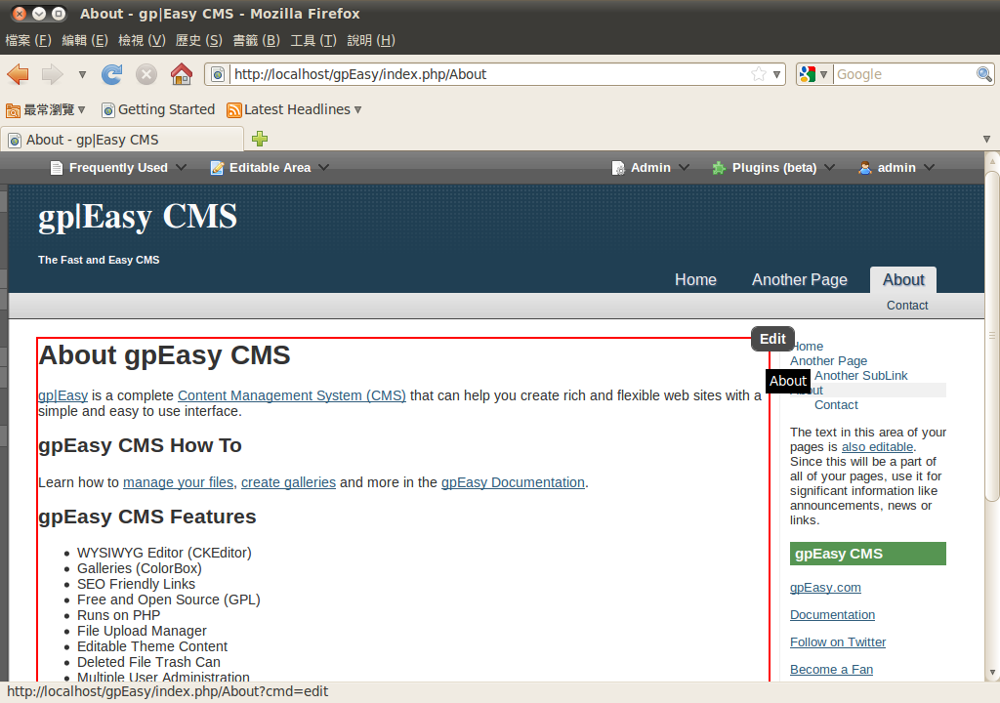
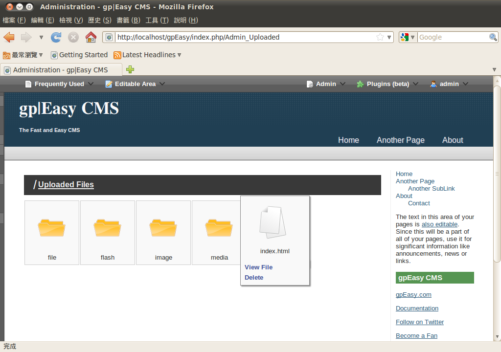
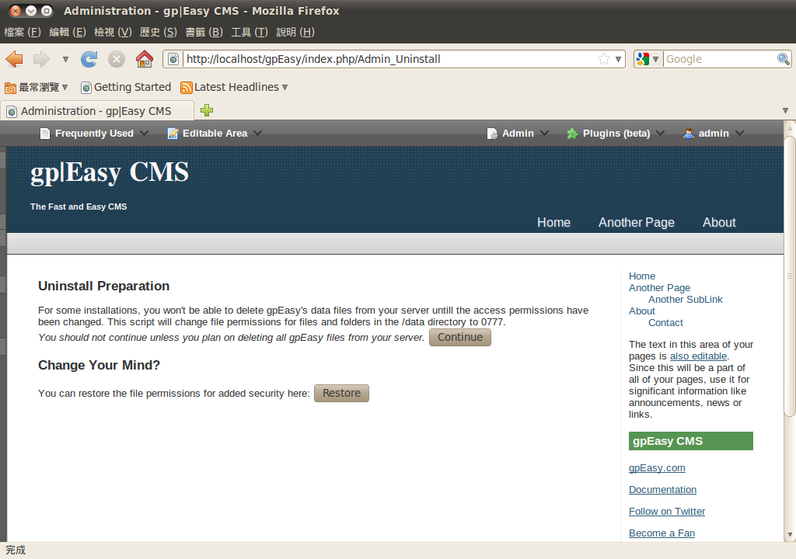
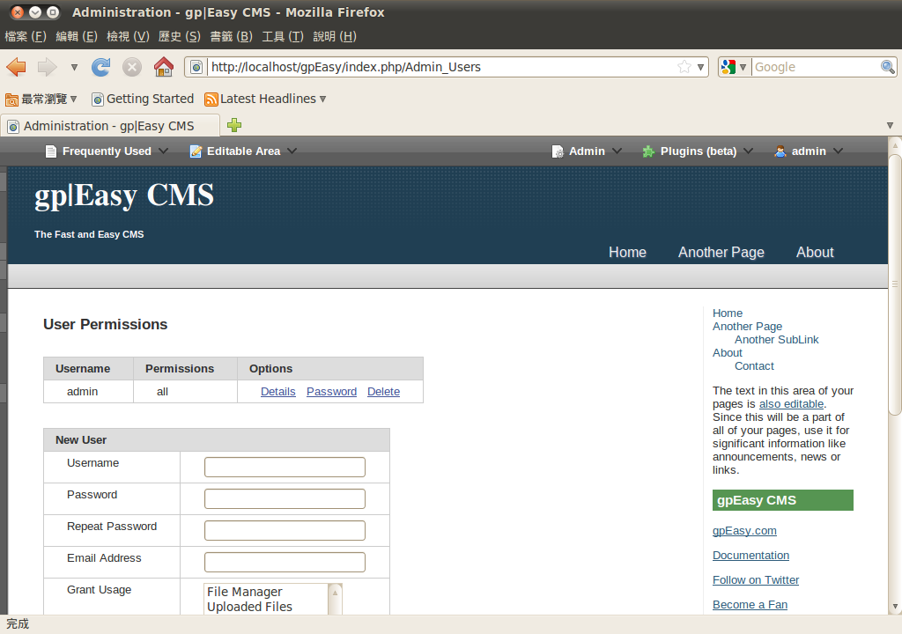

感謝您對「自由軟體鑄造場」的支持與愛護，十多年來「自由軟體鑄造場」受中央研究院支持，並在資訊科學研究所以及資訊科技創新研究中心執行，現已完成階段性的任務。 原網站預計持續維運至 2021年底，網站內容基本上不會再更動。本網站由 Denny Huang 備份封存。
也紀念我們永遠的朋友 李士傑先生（Shih-Chieh Ilya Li）。
也紀念我們永遠的朋友 李士傑先生（Shih-Chieh Ilya Li）。
無須使用資料庫的內容管理系統 - gpEasy CMS
Created at Wednesday, 25 August 2010 22:18 Last Updated on Monday, 30 August 2010 19:31
自從 WWW 被發明以來，建置網站一直是許多公司行號，推廣自家產品的重要方式。雖然這不是販售公司產品唯一的途徑，但相對於傳統的廣告行銷而言，這樣的方式的確有相當程度的優勢存在。至少當訪客有相關產品資訊的需求時，都能從搜尋引擎中找到自己的網站。並且網站除了作為公司或企業在產品銷售上的輔助工具以外，有時也相當適合作為個人發表作品或分享想法與心得的園地。其實任何人只要有意願，都可以自行架設網站，讓自己在網路界佔有一席之地。內容管理系統與 gpEasy CMS 的簡介
官方網站：https://www.gpeasy.com/下載網址：https://ncu.dl.sourceforge.net/project/gpeasy/gpeasy/1.6.3/gpEasy_1.6.3.tar.gz (772KB)
建置網站有許多方法，企業一般來說會將網站設計外包，由專業的網站設計人員協助網站的架設。而以個人用途而言，過往可能會採用傳統 HTML 網頁直接撰寫的方式，現今則大多數人會選擇採用使用 Blog 的方式進行架設。當然也有可能針對不同的用途，採用現成的網站系統進行架設。例如論壇系統可以在短短的幾分鐘之內成立一個新的論壇網站，使用者甚至不需要理解網頁相關的程式語言該如何撰寫。除了這些方式以外，目前網路上也出現另一種趨勢，也就是利用內容管理系統 （Content Management System, CMS） 的輔助，進行網站系統的架設。
內容管理系統可以視為一套輔助使用者進行網站內容建立、管理，或是編輯的應用軟體。如果本身設計得當，使用者甚至可以完全不需要理解網頁設計的程式語言或是相關的標準。大多數的內容管理系統都已經內建所見即所得的編輯器、檔案管理，或是允許使用者自行更換網站外觀等各種不同的實用功能。而本文所要介紹的 gpEasy CMS，本身也是以內容管理系統方式設計的網站建置系統。而且如同軟體名稱所提示的一樣，gpEasy CMS 在架設與管理方面非常易於上手，不需要花費太多心力即可完成一個網站的建立。

▲ gpEasy CMS 的操作畫面
gpEasy CMS 的名稱，主要來自於 GPL 與 Easy 二個關鍵字。由此可知，gpEasy CMS 本身會是採用開放原始碼的 GPL 授權方式釋出，並以自由軟體的方式提供使用者下載使用。除非此系統的軟體名稱有重大變更，否則幾乎可以確定它會持續採用相同的方式推出後續版本，不會在授權政策上有太大的變動。
除了安裝與使用都非常容易以外，gpEasy CMS 本身也在設計上進行相當程度的簡化。最明顯的一點，是 gpEasy CMS 並不需要資料庫系統的支援。如果以系統管理者身份登入系統，也可以發現只要在同一個視窗之中進行操作，即可完成大多數的頁面編輯或設定工作。此外，由於 gpEasy CMS 的頁面載入速度相當快速，再加上本身的架構已經針對搜尋引擎做過最佳化，所以無論是個人使用或是作為商業網站用途都相當合適。內建的 CKEditor 編輯器，可以讓使用者在編輯頁面時立即得知編輯結果，不需要等到頁面完全編輯完成之後才能檢視結果。
使用 gpEasy CMS 可以不需要任何 HTML 或是其他網頁語言的知識，甚至也不需要了解何謂中繼資料 (meta data)。這種易於上手、易於使用的設計理念，已經被 gpEasy CMS 的開發團隊視為終身目標。無論將來的版本如何演變，都會以達到上述的使用理念作為最主要的開發概念。gpEasy CMS 本身也提供了一個線上的展示網站，其網址為 https://tinyurl.com/26z8dtq。實際使用 gpEasy CMS 之前可以先行測試，再決定是否採用該系統。
gpEasy CMS 的特色所在
由於本身為一套相當完整的 CMS 系統，gpEasy CMS 提供了相當完善的操作功能，以用來輔助使用者進行網站資料的建立，並讓網站建立、管理的作業較為彈性化。這些完善的操作功能也佐以容易使用的操作介面，以協助使用者能最快的時間之內完成所有操作動作，並快速建立一個可以順暢運作的網站。並且採用開放原始碼的方式釋出軟體，以及主要也是網頁語言中，最多人採用的 PHP 語言進行開發，因此如果有需要自行修改 gpEasy CMS 的需求，在實際作業上也不至於遭遇太大的困難。gpEasy CMS 最明顯的優點，在於整合了一套以 CKEditor 為基底所建立的所見即所得編輯器。由於在大多數情況下，網頁的內容都會使用編輯器直接進行處理。如果編輯器可以讓使用者很清楚的了解文件完成後的顯示外貌，將可以避免文件排版不佳，或是文字內容不易閱讀等各種問題的產生。而雖然在編輯時所看到的畫面與實際輸出結果可能稍有差異，但基本上相去不遠，仍然可以作為畫面排版時的參考依據。

▲ gpEasy CMS 內建所視即所得的編輯器
CKEditor 本身可以提供的功能相當多，例如文字格式的變化、超連結的建立與編輯、圖片內嵌等等。無論編輯的內容是單純的文字頁面，或是需要在文字之中夾雜圖片、超連結，或是附上電子郵件位址等各種不同的資料，都能輕易完成。
gpEasy CMS 本身也支援相片圖庫的彙整功能，可以讓使用者進行相片的管理工作。gpEasy CMS 的相片圖庫功能基本上是將 ColorBox 這一套外掛程式整合至主系統之中，只是加上了一些修改，以便符合 gpEasy CMS 本身的需求。
由於大多數的網站架設者，都希望網站可以得到更高的曝光率，以便吸引更多的訪客前來瀏覽，因此網站本身是否可以在搜尋引擎上容易地被找到，也成了一門重要的課題。在曝光率的議題上，如果網站本身所使用的連結表示方式，能直接符合搜尋引擎的規範，就能大幅改善網站在搜尋引擎之中的排列先後順序。在這一方面， gpEasy CMS 已經將本身所產生的連結針對搜尋引擎做過最佳化的工作，即使用符合 SEO 規範的超連結。因此採用 gpEasy CMS 不但可以快速完成網站的架設工作，也能在搜尋引擎的搜尋結果之中，輕易達到較高的曝光效果。
雖然 gpEasy CMS 目前的版本尚未支援正體中文，但因為大多數的網頁內容都能直接以中文進行編輯，因此是否有提供正體中文的使用介面影響並不大。而 gpEasy CMS 讓人印象最深刻的一點，便是所有的網頁外觀內容都能夠加以編輯，且編輯時只需要將滑鼠移動至該部份上方，畫面便會自動浮現編輯鍵，直接點選編輯鍵，即可開啟編輯器，並編輯此部份的網頁內容。如果有需要的話，外觀主題的管理功能也可以針對各部份的顏色直接進行修改，增加了許多使用上的便利性。

▲ 網頁外觀可直接進行編輯，操作上十分便利。
由於在內容管理系統之中，並不是只有文件資訊的提供，檔案管理也是相當常用的功能之一，因此 gpEasy CMS 也針對這部份提供了相關的功能。如果有任何檔案需要上傳至 gpEasy CMS 的系統中，可以直接使用 gpEasy CMS 提供的檔案管理功能進行上傳。檔案在 gpEasy CMS 之中也可以採用樹狀目錄的管理方式進行處理，並且使用了相當易於辨識的圖示代表目錄或是檔案本身。gpEasy CMS 的檔案管理功能也能直接開啟或是刪除檔案，但考慮到有時使用者在操作時若產生疏忽，可能會不小心刪除重要的檔案，因此 gpEasy CMS 針對被刪除的檔案也提供鄉回收桶功能。檔案刪除時會先存放在回收桶之中，如果發生誤刪檔案的情況，便能立即從此處救回檔案。

▲ gpEasy CMS 的檔案管理功能也相當完善。
由於 gpEasy CMS 本身並沒有使用資料庫系統，因此在安裝時大幅減少遭遇問題的機會，也降低了安裝時的複雜度。這樣的設計理念，帶來的是更快速的安裝過程，以及更加容易上手的使用經驗。除了安裝步驟相當容易之外，如果因為任何理由不打算繼續使用 gpEasy CMS，也可以使用內建的反安裝功能進行系統移除。一般而言大多數的網站架設系統並不希望使用者停止使用該系統，因此不會很明確的告知使用者完整移除系統的操作程序。但 gpEasy CMS 不但在安裝過程中進行簡化，甚至還直接提供反安裝功能，可見系統的設計理念完全是以使用者為出發點，期望帶給使用者一個全新的架站體驗。

▲ gpEasy CMS 提供了少見的反安裝功能設計。
除了在安裝過程中，可以相當快速的完成網站的安裝流程之外，由於經過適當的設計，gpEasy CMS 的頁面載入速度也相當快。這樣的設計方式可以避免訪客在讀取頁面時，因為系統反應過慢而無心等待的問題。雖然影響網頁載入速度的原因相當多，有一些並非 gpEasy CMS 可以直接處理並加以解決，但能夠針對網頁載入速度進行最佳化，也是 gpEasy CMS 期望達到「容易使用」這個目標的努力方向之一。
如果網站系統本身是架設在公司行號之中，可能會因為職務的安排而需要同時有二個以上的人員負責網站的管理工作。這種多管理者的管理方式在 gpEasy CMS 上完全沒有問題，只需要在建立新的使用者帳號時，直接設定該使用者為系統管理員身分即可。如果是現成的使用者帳號，也可以透過編輯帳號設定的方式提升特定使用者的管理權限。

▲ gpEasy CMS 的系統管理功能允許一個以上的系統管理員帳號同時存在。
但如果系統之中同時有數名系統管理員帳號的存在，難免會遭遇同時有二人以上要進行系統管理工作的情況。如果要避免二個以上的系統管理員同時處理同一件工作的情況發生，除了彼此先進行協調以外，另外一個處理方法便是將 gpEasy CMS 系統設定為安全模式。此時系統將暫時離線，並提供 FTP 功能以便進行檔案處理。除非恢復正常運作模式，否則其他人將無法針對系統進行任何處理，以便避開同時管理網站內容，可能發生的問題。
結語
對於稍有經驗的網站架設人員而言，架設網站相關的技術其實並不難，有一些基本的網站管理知識即可進行。但如何讓網站的外觀可以易於操作與使用，則需要在網頁介面方面花費一些心力進行設計，才有可能達到這樣的目標。如果使用者本身對於網頁設計相關的議題並不熟悉，或許改用 gpEasy CMS 這樣的內容管理系統，會是一個更方便架設與輕鬆管理的解決方案。作者簡介
翁卓立逢甲大學資訊工程學系、台灣科技大學電子所畢業，目前擔任韌體研發工作，主要使用 Embedded Linux 進行產品開發。著有「Linux 進化特區：Ubuntu 10.04 從入門到精通」等書。
Special


Open Source Software Foundry‧ Best Viewed with IE7.0 or Firefox2.0 above, 1024x768 Resolution. E-Mail：contact@openfoundry.org
Address：No.128, Sec.2, Academia Rd., Institute of Information Science, Academia Sinica, Nangang District, Taipei City 11529, Taiwan (R.O.C).
Privacy Policy. Terms-of-use
Address：No.128, Sec.2, Academia Rd., Institute of Information Science, Academia Sinica, Nangang District, Taipei City 11529, Taiwan (R.O.C).
Privacy Policy. Terms-of-use